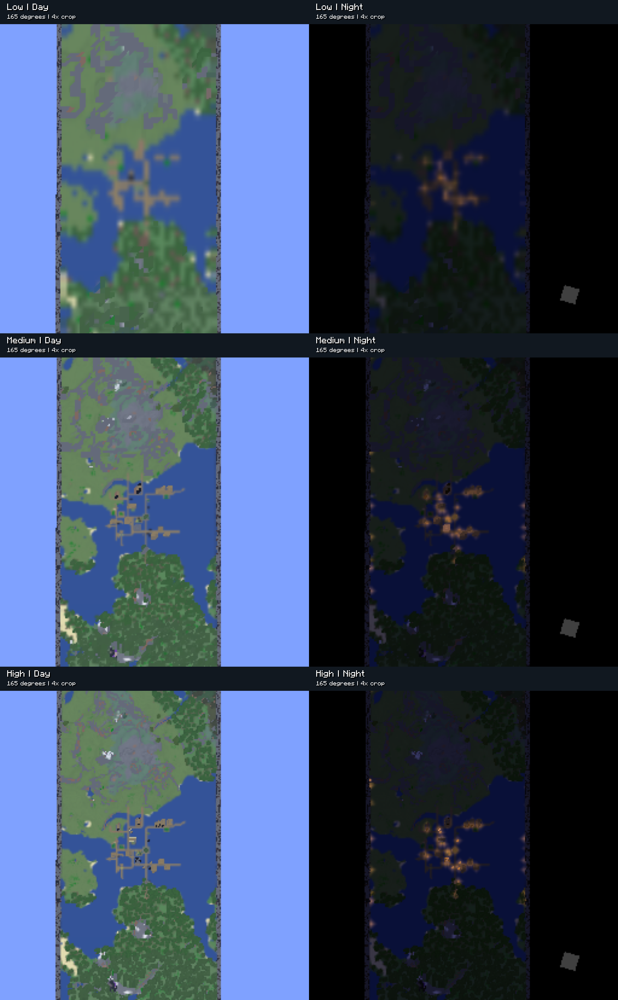
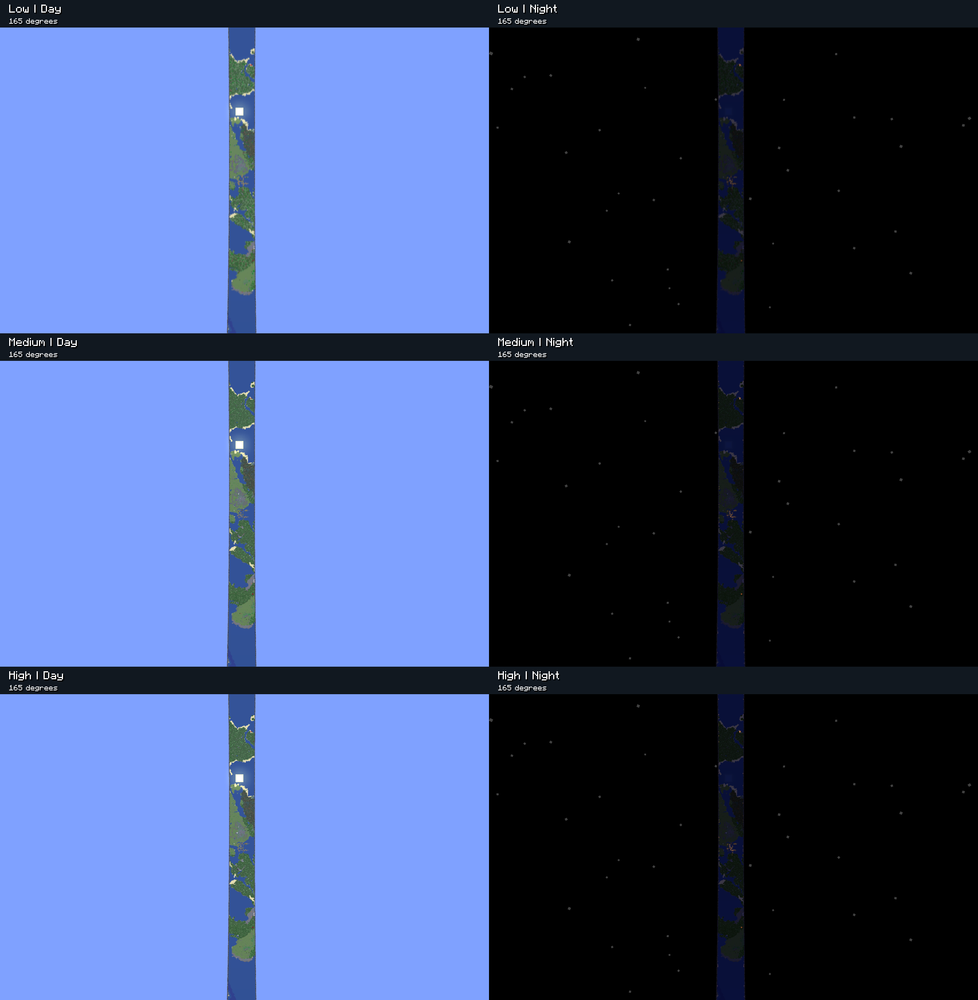
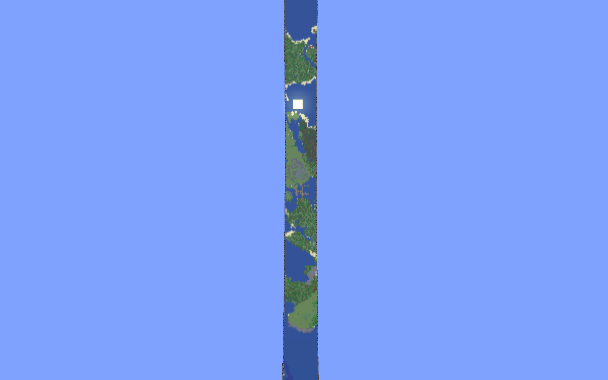
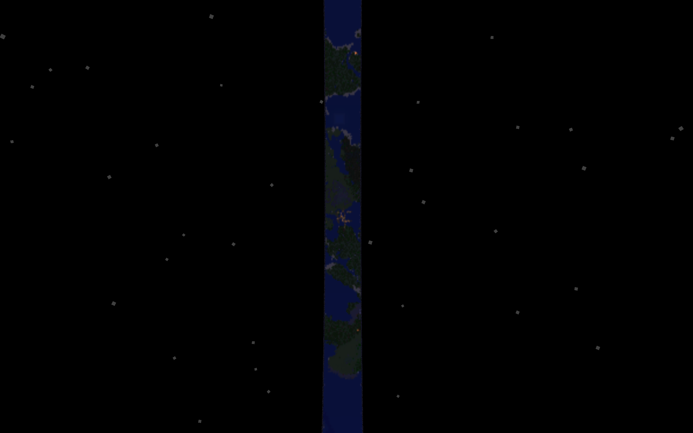
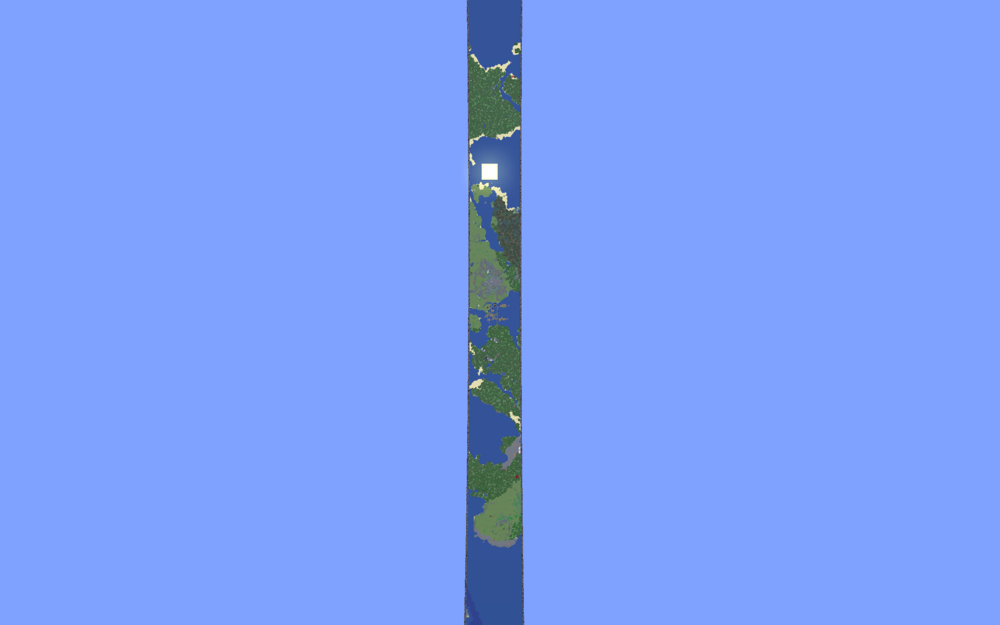
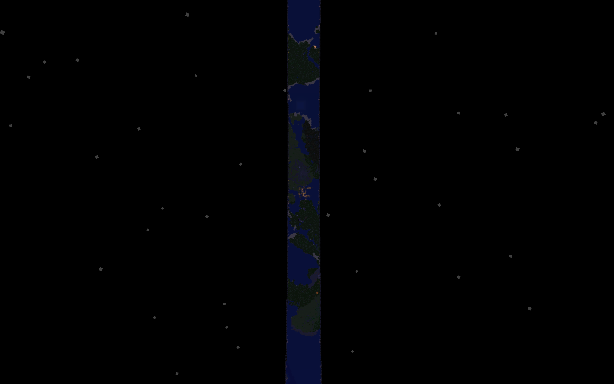

Day on the left, night on the right. Low, Medium and High from top to bottom. Vanilla-generated village viewed from 165° around a 16,384 × 256 ring.
Identical 4× crops of the original captures; no exposure changes.






Development build on Minecraft 26.2 Fabric. Labels use Minecraft bitmap glyphs added after capture. See README.md for settings mapping and provenance.